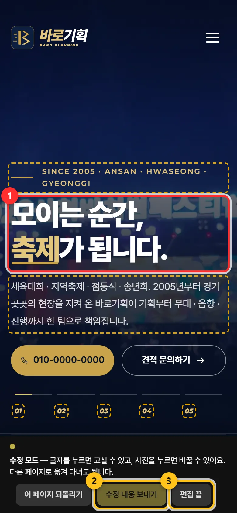
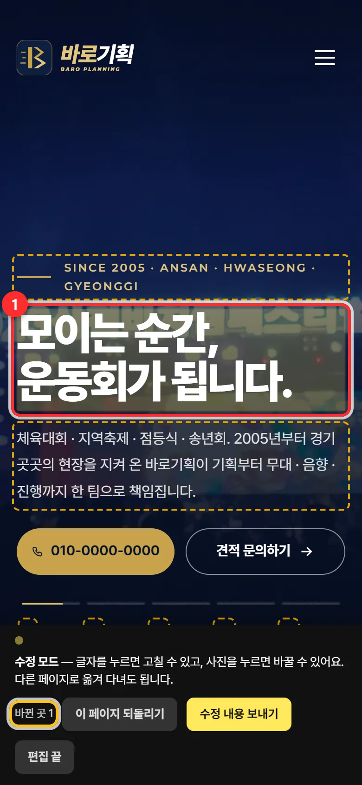
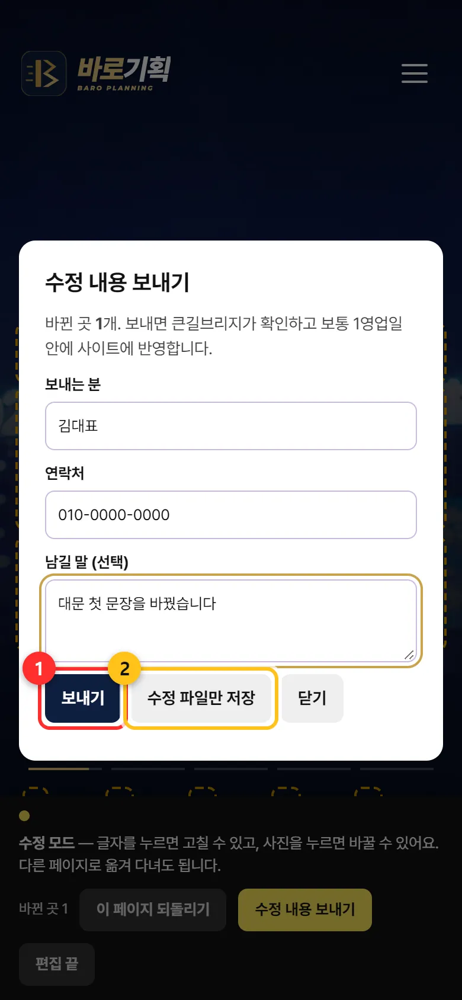

홈페이지 글 · 사진 직접 고치기 (수정 모드)
홈페이지 화면에서 글자를 눌러 고치고 사진을 바꾼 뒤, 「수정 내용 보내기」로 큰길브리지에 보내면 반영해 드립니다.
우리홈페이지주소/?edit=열쇠언제 쓰나요
- 전화번호 · 문구 · 가격 안내처럼 글자를 바꾸고 싶을 때.
- 대문 사진을 새 행사 사진으로 바꾸고 싶을 때.
수정 모드에서 고친 것은 바로 손님에게 보이지 않습니다. 보내 주시면 큰길브리지가 확인하고 보통 1영업일 안에 홈페이지에 반영합니다. 디자인 · 색 · 순서는 바뀌지 않으니 홈페이지가 망가질 걱정은 없습니다.
이렇게 하세요
열쇠가 붙은 주소로 들어갑니다
큰길브리지가 문자로 드린 주소(
우리홈페이지주소/?edit=열쇠)를 엽니다. 맞으면 고칠 수 있는 글자마다 노란 점선이 생기고, 맨 아래에 검은 막대(「수정 모드」)가 나옵니다. 열쇠가 틀리면 아무것도 바뀌지 않습니다.
① 점선 글자를 누르면 고칠 수 있음 ② 수정 내용 보내기 ③ 편집 끝 글자를 누르고 고칩니다
점선 글자를 누르면 글쓰기처럼 고칠 수 있습니다. 엔터는 줄바꿈입니다. 고치면 아래 막대에 「바뀐 곳 1」처럼 개수가 나옵니다.
사진은 사진을 누르면 폰 사진첩이 열립니다. 고르면 그 자리에 바뀌어 보입니다.

대문 문장을 고친 모습 — 아래에 「바뀐 곳 1」 다른 페이지도 고칩니다
같은 창에서 메뉴를 눌러 다른 페이지로 가도 수정 모드가 이어지고, 고친 것은 그 폰에 자동으로 보관됩니다. 수정 중에는 본문 속 링크를 눌러도 넘어가지 않습니다(글자 고치기가 먼저).
「수정 내용 보내기」
「보내는 분」 · 「연락처」(꼭) · 「남길 말」을 적고 보내기. 글 수정은 바로 큰길브리지 메일로 갑니다.
사진을 바꿨다면 사진은 메일로 보내기엔 커서 수정 파일이 따로 만들어집니다. 폰에서는 공유창이 바로 뜨니 카톡이나 메일로 큰길브리지(1533-7295 · gilauto325@gmail.com)에 보내 주세요. 수정 파일만 저장은 파일만 만들 때 씁니다.

① 보내기 ② 수정 파일만 저장 「편집 끝」
다 했으면 막대의 편집 끝을 누릅니다. 평소 홈페이지 화면으로 돌아갑니다.
자주 하는 실수 · 질문
글을 잘못 고쳤어요
아직 보내기 전이면 막대의 이 페이지 되돌리기를 누르세요. 지금 보고 있는 페이지의 고친 것이 모두 원래대로 돌아갑니다. 이미 보냈다면 큰길브리지에 「아까 보낸 것 중 ○○는 빼 주세요」라고 말씀해 주세요.
「연락처를 적어 주세요」가 나와요
반영이 끝나면 문자로 알려 드리기 위해 연락처가 꼭 필요합니다.
「메일 전송이 안 됐어요」가 나와요
수정 파일만 저장을 눌러 파일을 만든 뒤 카톡이나 메일로 큰길브리지에 보내 주세요.
새 창에서 열었더니 점선이 없어요
수정 모드는 열쇠 주소로 연 그 창에서만 이어집니다. 새 창이라면 문자로 받은 열쇠 주소로 다시 들어가세요. 고친 내용은 그 폰에 보관되어 있어 다시 나타납니다.
열쇠를 잃어버렸어요
큰길브리지(1533-7295)에 전화 주세요. 열쇠도 암호처럼 카톡 단체방 등에 올리지 마세요.